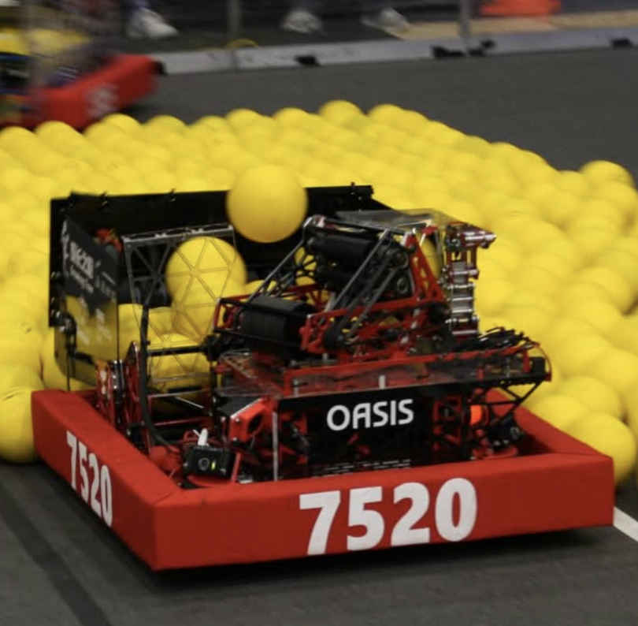

May 11, 2026
FIRST Championship Experience
This past week, I had the incredible opportunity to attend the FIRST Robotics Competition (FRC) World Championship in Houston, Texas, as a programming member of my community team, 7520. It was an unforgettable experience that allowed me to witness the culmination of hard work, dedication, and innovation from teams all over the world.
We were on the Daly division, and ended up facing both future world champions team 4414 and 1323 in the qualification rounds. This has been our best season yet as we made playoffs as a first pick for alliance 7!
